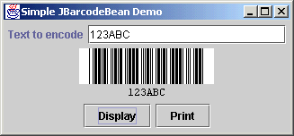

[back]
JBarcodeBean Code Examples
1. Servlet example
This example demonstrates how JBarcodeBean can be used as a server-side component, to serve barcode GIF images to a web browser client. In this trivial example, you enter the text to encode in a text box, and the server responds by displaying the barcoded version of the text when you click the Submit button.
1.1 The HTML
<HTML>
<HEAD>
<TITLE>Barcode Bean Servlet Test</TITLE>
</HEAD>
<BODY>
<FORM method="get" action="servlet/ServletTest">
Text to encode:
<INPUT type="text" size="20" name="code">
<INPUT type="submit" value="Display barcode">
</FORM>
</BODY>
</HTML>
1.2 The Java:
import javax.servlet.*;
import javax.servlet.http.*;
import java.io.*;
import jbarcodebean.*;
public class ServletTest extends HttpServlet {
JBarcodeBean bb;
public void init(ServletConfig conf) throws ServletException {
super.init(conf);
bb = new JBarcodeBean();
bb.setCodeType(new ExtendedCode39());
bb.setShowText(true);
}
public void doGet(HttpServletRequest req, HttpServletResponse resp)
throws ServletException, IOException {
resp.setContentType("image/gif");
OutputStream out = resp.getOutputStream();
bb.setCode(req.getParameter("code"));
bb.gifEncode(out);
}
}
2. Application example
The simplest way to integrate JBarcodeBean into an application's user interface, is to utilize Javabean-support in popular GUI-builder tools and IDEs, such as JBuilder. These tools allow you to drag-and-drop components from a component palette on to your application's user interface.
If your development environment does not support Javabeans in this way, or you prefer to integrate UI components "by hand", then the following code sample may be of interest to you.

import java.awt.*;
import java.awt.event.*;
import java.awt.print.*;
import javax.swing.*;
import jbarcodebean.*;
public class SimpleDemo extends JFrame {
private static String titleString = "Simple JBarcodeBean Demo";
JBarcodeBean bb = new JBarcodeBean();
JButton displayButton = new JButton("Display");
JButton printButton = new JButton("Print");
JLabel labelCode = new JLabel("Text to encode");
JTextField codeTextBox = new JTextField(20);
// Application Entry Point
public static void main(String[] args) {
SimpleDemo simpleDemo = new SimpleDemo();
}
// Constructor
public SimpleDemo() {
super(titleString);
// Set some JBarcodeBean properties
bb.setCodeType(new ExtendedCode39());
bb.setShowText(true);
bb.setCode("");
JPanel tempPanel;
// Create a button panel at the bottom of the form
tempPanel = new JPanel();
tempPanel.add(displayButton);
tempPanel.add(printButton);
getContentPane().add(tempPanel, "South");
// Text field at the top of the form
tempPanel = new JPanel();
tempPanel.add(labelCode);
tempPanel.add(codeTextBox);
labelCode.setLabelFor(codeTextBox);
getContentPane().add(tempPanel, "North");
// Barcode in the center
getContentPane().add(bb, "Center");
// Set component listeners
this.addWindowListener(new WindowAdapter() {
public void windowClosing(WindowEvent evt) {
System.exit(0);
}
});
displayButton.addActionListener(new ActionListener() {
public void actionPerformed(ActionEvent evt) {
bb.setCode(codeTextBox.getText());
}
});
printButton.addActionListener(new ActionListener() {
public void actionPerformed(ActionEvent evt) {
bb.setCode(codeTextBox.getText());
printBarcode();
}
});
// Display form
pack();
show();
}
// This method prints the barcode on the default printer
private void printBarcode() {
PrinterJob pj = PrinterJob.getPrinterJob();
PageFormat pf = pj.defaultPage();
pj.setPrintable(new Printable() {
public int print(Graphics g, PageFormat format, int pageNum) throws PrinterException {
if (pageNum > 0) {
return Printable.NO_SUCH_PAGE;
}
Graphics2D g2d = (Graphics2D) g;
g2d.translate(format.getImageableX(), format.getImageableY());
Color oldBackground = bb.getBackground();
bb.setBackground(bb.getBarcodeBackground());
bb.paint(g2d);
bb.setBackground(oldBackground);
return Printable.PAGE_EXISTS;
}
}, pf);
try {
pj.print();
JOptionPane.showMessageDialog(this, "Barcode has been printed", titleString,
JOptionPane.INFORMATION_MESSAGE);
} catch (PrinterException ex) {
JOptionPane.showMessageDialog(this, "Error printing barcode", titleString,
JOptionPane.ERROR_MESSAGE);
}
}
}
[back]